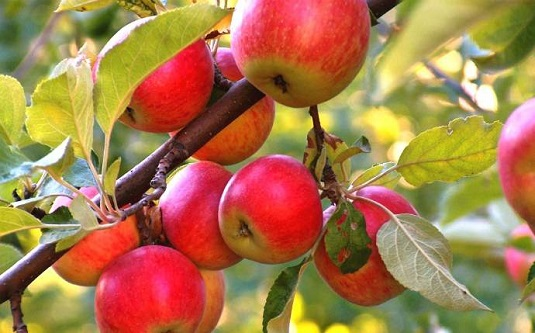

Я́блоня (лат. Mālus) — род листопадных деревьев и кустарников семейства Розовые (Rosaceae) с шаровидными сладкими или кисло-сладкими плодами. Происходит из зон умеренного климата Северного полушария.

| Размер | Цена |
|---|---|
| 5-6 лет | 7500р |
| 7-8 лет | 12700р |
Гру́ша (лат. Pýrus) — род плодовых и декоративных деревьев и кустарников семейства Розовые (Rosaceae).

| Размер | Цена |
|---|---|
| 5-6 лет | 7500р |
| 7-8 лет | 12700р |